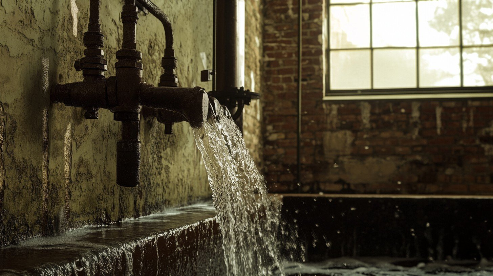

La chambre Goutte à Goutte est une superbe pièce dite humide, où l’eau s’invite volontiers sans prévenir. Son robinet, fidèle compagnon de vos nuits, offre une berceuse aquatique ininterrompue, parfaite pour les amateurs de méditation sonore ou d’insomnie contemplative. Le sol, légèrement immergé, vous garantit une expérience immersive au sens propre.
Côté lit, la chambre Goutte à Goutte vous accueille avec une literie d’époque — un matelas légèrement ondulé par l’humidité ambiante, offrant un soutien aléatoire mais surprenant. Les draps, toujours frais (voire mouillés), vous enveloppent dans une fraîcheur naturelle que même les palaces n’osent plus proposer.
La salle de bain attenante, quant à elle, prolonge cette atmosphère aquatique avec un carrelage patiné par le temps et des joints qui racontent des histoires. Le miroir, délicatement embué en permanence, saura flatter votre ego sans jamais trop vous en montrer. L’eau chaude, capricieuse mais pleine de personnalité, vous rappellera que tout luxe a ses limites.
